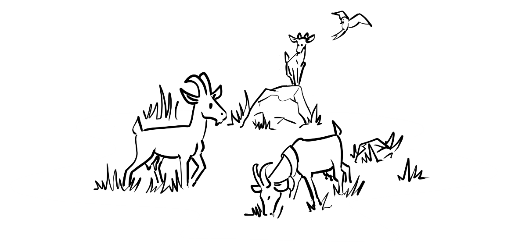
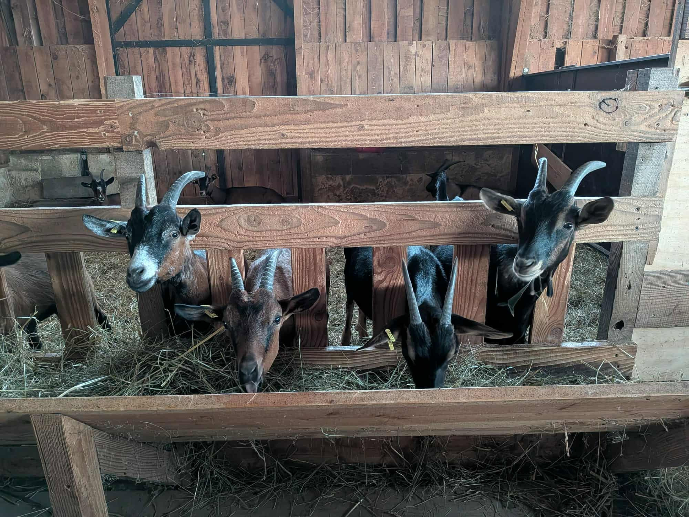
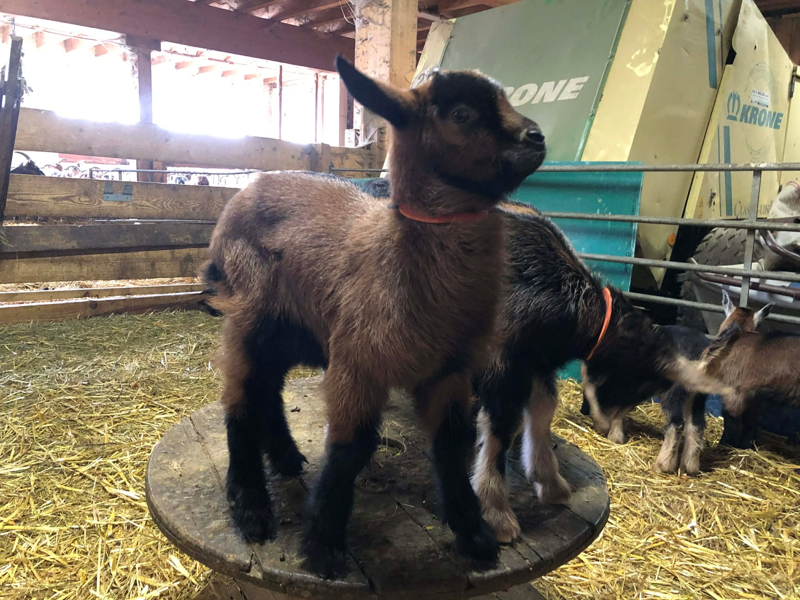

Des chèvres rustiques et heureuses 🐐
Curieuses, intelligentes et particulièrement attachantes, nos chèvres animent la ferme de leur belle énergie ! Tout comme pour nos vaches ou nos porcs, nous avons fait le choix d'un élevage à taille humaine, respectueux du rythme naturel de l'animal.
Notre troupeau est composé de races rustiques, sélectionnées pour leur robustesse et leur parfaite adaptation à notre climat. Elles passent un maximum de temps en extérieur, où elles peuvent exprimer leurs comportements naturels, grimper et explorer leur environnement.
Des débroussailleuses naturelles 🌿
Dans notre écosystème agroécologique, les chèvres jouent un rôle très différent de celui des vaches. Alors que les bovins préfèrent l'herbe grasse de nos prairies, les chèvres sont des exploratrices gourmandes !
Elles raffolent des feuilles, des jeunes pousses d'arbres, des ronces et des ligneux. En pâturant dans les zones plus boisées ou autour de nos haies, elles entretiennent naturellement le paysage et participent au maintien de la biodiversité sur nos terres, tout en profitant d'une alimentation riche et variée.
De la chèvrerie à la fromagerie 🧀
C'est grâce à cette alimentation diversifiée et au bien-être de notre troupeau que nous obtenons un lait d'une qualité exceptionnelle, riche en arômes.
Après la traite, le lait cru prend directement le chemin de notre fromagerie artisanale. Il y est transformé avec passion pour vous offrir notre gamme de fromages lactiques : des petits chèvres frais au goût délicat, des crottins affinés de caractère, ou encore nos fromages cendrés typiques du savoir-faire paysan.

